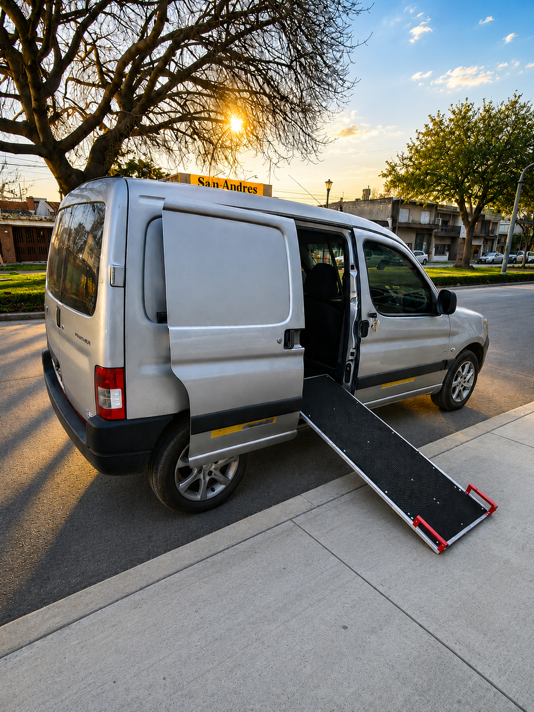
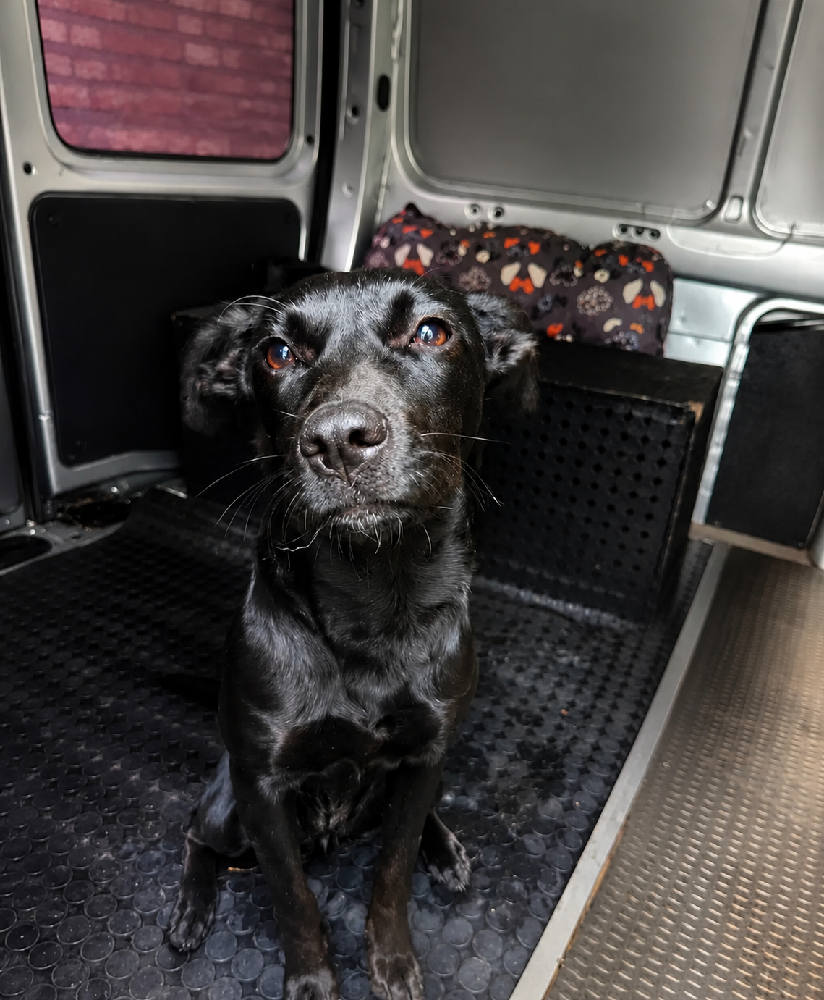
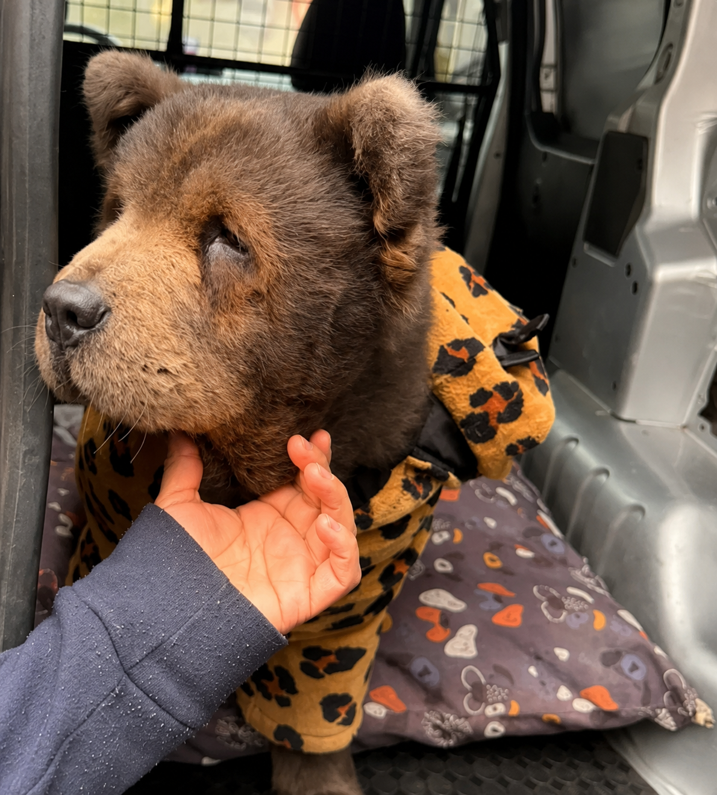
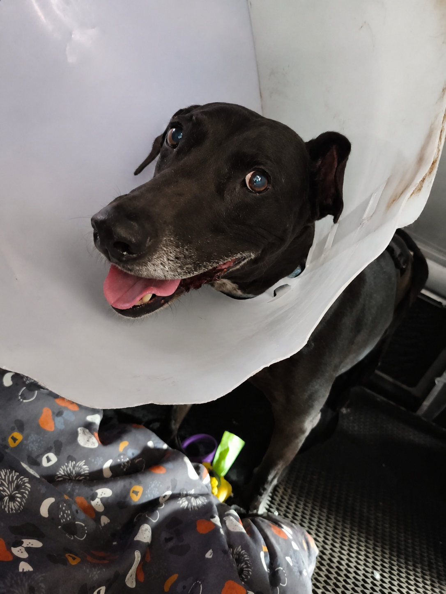
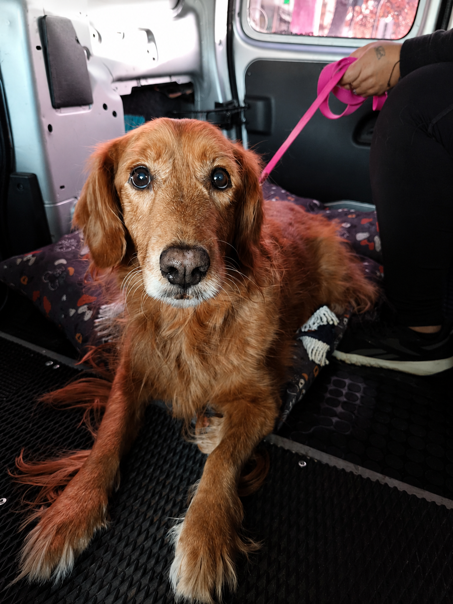
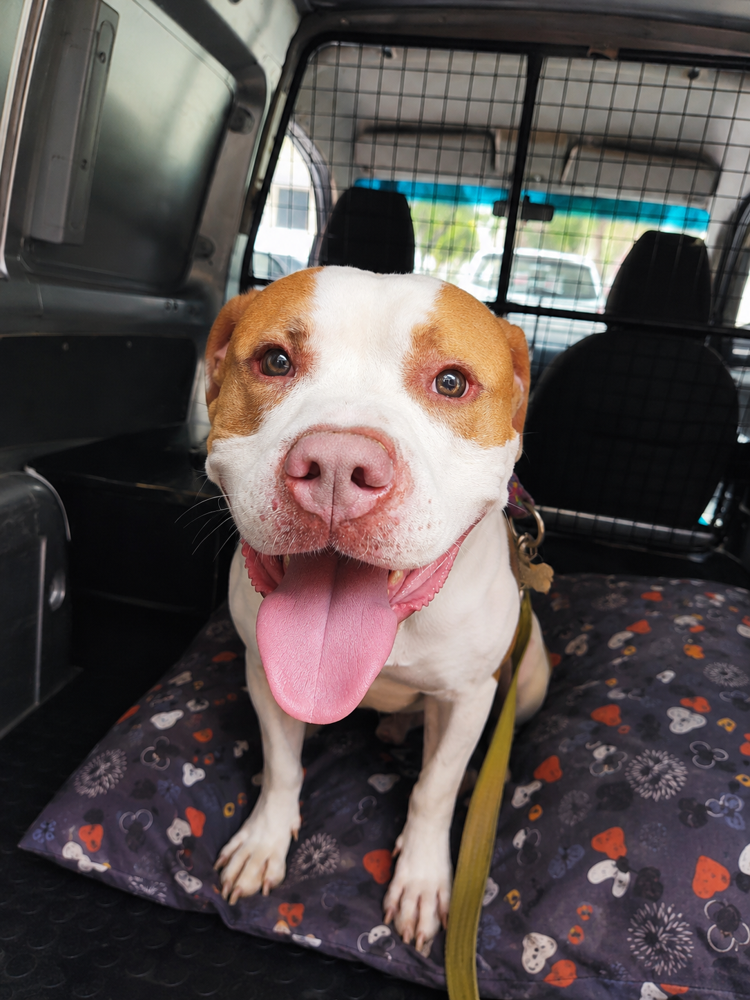
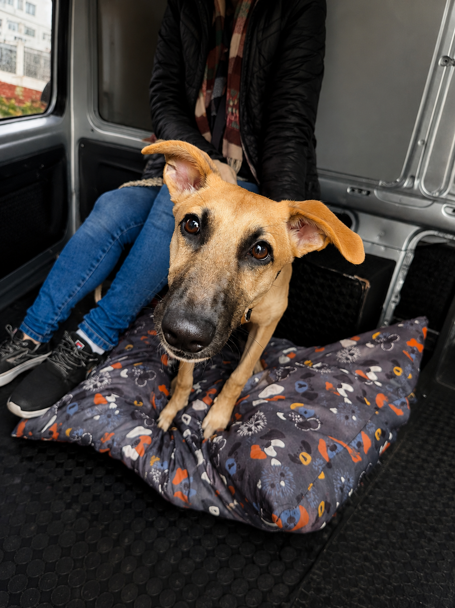

Viajes seguros, cómodos y personalizados. Tu mascota viaja tranquila desde que sale de casa hasta su destino.
Reservar por WhatsAppFamilias ya confiaron en WUOF.
Calificación en Google.
Atención personalizada.
Traslados programados o urgentes.
Llevamos y retiramos tu mascota.
Coordinamos cada detalle del viaje.
Traslados puerta a puerta.
Vehículo preparado para brindar un traslado seguro, limpio y confortable.






★★★★★ Más de 100 familias ya eligieron WUOF para trasladar a sus mascotas.